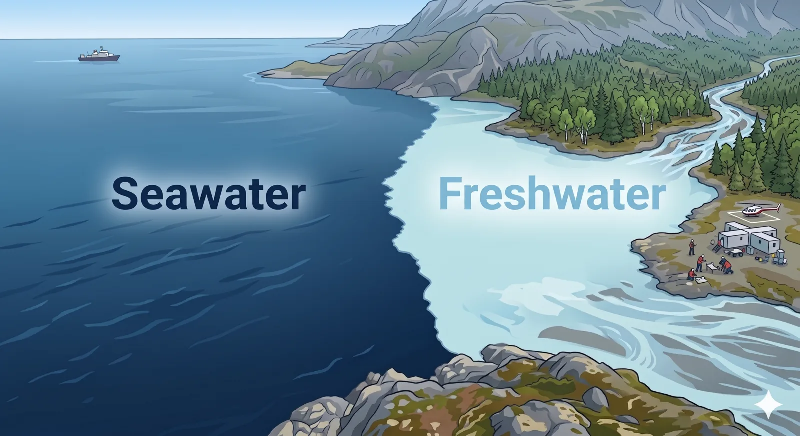

İnce seçici filmler suyu, tuzları ve gazları nasıl ayırır; aynı fizik, nehir suyunun deniz suyuyla buluşmasını nasıl elektriğe çevirebilir.
Atılım Üniversitesi ATÜ-LAP-2526-07 numaralı araştırma projesi; Doç. Dr. Enver Güler'in rehberliği ve danışmanlığında Mohammed Anwar Mahram ve Saed Wael Suleiman tarafından yürütülmüştür.
Membran, iki faz arasında seçici bir bariyerdir. Bir itici kuvvet altında bazı türler diğerlerinden daha hızlı geçer; membran ayırmasının tamamı bu hız farkına dayanır.
Kısa bir tarihçe
1748'de Abbé Nollet suyun bir domuz mesanesinden şaraba geçtiğini gördü: kayda geçen ilk osmoz. Adolf Fick difüzyon yasasını 1855'te yazdı, Thomas Graham 1866'da gazların kauçuktan geçişini inceledi, van 't Hoff ise 1887'de osmotik basınca termodinamik biçimini verdi. Frederick Donnan 1911'de bir jeldeki sabit yüklerin aynı işaretli iyonları neden dışarıda tuttuğunu açıkladı. Alan 1960'ların başında bir sanayiye dönüştü: Sidney Loeb ve Srinivasa Sourirajan ilk asimetrik selüloz asetat membranı döktü. Gözenekli bir destek üzerindeki yaklaşık 0,1–0,2 µm kalınlığındaki yoğun deri, ters ozmozla tuzdan arındırmayı uygulanabilir kıldı. Sentetik iyon değiştirici membranlar (Juda ve McRae, 1950) elektrodiyalizi mümkün kıldı; 1954'te R. E. Pattle aynı membranların tuzlu ve tatlı sudan elektrik üretebileceğini gösterdi. Bu sitenin arkasındaki fikir budur.
İtici kuvvetler
Her membran prosesi, geçen türü karşıya iten kuvvetle tanımlanır. Bir \(i\) türünün akısı, kimyasal (veya elektrokimyasal) potansiyeli \(\mu_i\)'nin gradyanıyla orantılıdır:
\(a_i\) aktivite, \(p\) basınç, \(\varphi\) elektrik potansiyeli, \(z_i\) yük sayısı. Her terim bir proses ailesine karşılık gelir.
İtici kuvvet
Prosesler
Tipik kullanım
Basınç farkı Δp
Mikrofiltrasyon, ultrafiltrasyon, nanofiltrasyon, ters ozmoz
Berraklaştırma, protein derişikleştirme, yumuşatma, tuzdan arındırma
Derişim farkı Δc
Diyaliz, difüzyon diyalizi, ileri ozmoz, pervaporasyon
Hemodiyaliz, asit geri kazanımı, çözücü kurutma
Elektrik potansiyeli ΔE
Elektrodiyaliz (ED), ters elektrodiyaliz (RED)
Acı su arıtma, tuz üretimi, mavi enerji
Sıcaklık farkı ΔT
Membran distilasyonu
Düşük dereceli ısıyla tuzlu su derişikleştirme
Basınçla çalışan membranlar: kabadan sıkıya
Basınçla çalışan aile, neyi tuttuğuna göre sıralanır. Gözenekler küçüldükçe tutulan çözünenlerin osmotik basıncının da yenilmesi gerekir, bu yüzden işletme basıncı artar.
Proses
Gözenek / kesme
Basınç (bar)
Tutulan
Mekanizma
Mikrofiltrasyon
0,1–10 µm
0,1–2
Bakteriler, askıda katılar
Eleme
Ultrafiltrasyon
2–100 nm
1–10
Proteinler, virüsler, koloidler
Eleme
Nanofiltrasyon
≈1 nm
5–20
İki değerlikli iyonlar, şekerler
Eleme + yük (Donnan)
Ters ozmoz
yoğun, <0,5 nm
10–80
Tek değerlikli tuzlar
Çözünme–difüzyon
Gözenek akışı
Gözenekli membranlarda çözücü kapilerlerden akar; düz silindirik gözenekler için akıyı Hagen–Poiseuille denklemi verir:
Yoğun membranlarda kalıcı gözenek yoktur. Molekül besleme yüzeyinde polimerde çözünür, derişim gradyanı boyunca difüzlenir ve diğer yüzeyden ayrılır. Ayırma hem çözünürlük hem de difüzivite farklarından gelir. Ters ozmozda bu, osmotik basıncı aşan basınçla sürülen bir su akısı ve yalnızca derişim farkına bağlı bir tuz akısı verir:
van 't Hoff bağıntısıyla deniz suyunun (≈0,6 M NaCl eşdeğeri) osmotik basıncı yaklaşık 27 bar'dır. RED ve PRO'nun geri kazanmaya çalıştığı serbest enerji de budur.
Difüzyon: Fick'in birinci yasası
Yalnızca derişim farkı etki ettiğinde, \(\delta\) kalınlığındaki bir membrandan yarı-kararlı haldeki akı:
Bölüm 3'te membranımızın klorür difüzyon katsayısını bulmak için kullandığımız denklem budur.
İyon değiştirici membranlar
İyon değiştirici membranlar (IEM), yüksek derişimde sabit yüklü gruplar taşıyan yoğun polimer filmlerdir; tipik olarak kuru polimerin gramı başına 1–3 mmol. Sabit yük, şişmiş polimer içinde hareket edebilen zıt işaretli hareketli karşı iyonlarla dengelenir. Sabit yükle aynı işaretli iyonlar, yani eş iyonlar, dışarı itilir.
Katyon değiştirici membranlar (CEM) genellikle sülfonik asit (−SO₃⁻) gibi sabit negatif gruplar taşır. Na⁺, K⁺, Ca²⁺ geçer; Cl⁻ itilir.
Anyon değiştirici membranlar (AEM) genellikle kuaterner amonyum (−NR₃⁺) gibi sabit pozitif gruplar taşır. Cl⁻, SO₄²⁻ geçer; Na⁺ itilir. Fumasep® FAA-3-PK-75 membranımız bir AEM'dir.
Anyon değiştirici membranda Donnan dışlaması. Sabit pozitif yükler klorür karşı iyonlarını geçirir, sodyum eş iyonlarını elektrostatik olarak iter.
Donnan dengesi ve membran potansiyeli
Bir çözelti ile IEM arasındaki ara yüzeyde her hareketli iyonun elektrokimyasal potansiyeli iki tarafta eşittir. Membran zaten yüksek derişimde karşı iyon tuttuğundan bir ara yüzey potansiyeli, yani Donnan potansiyeli oluşur ve eş iyonları dışarıda tutar:
Tam seçici bir membranı farklı aktivitedeki iki çözelti arasına koyarsanız iki Donnan potansiyeli artık birbirini götürmez. Aradaki fark membran potansiyelidir; Nernst denklemiyle verilir ve görünür seçici geçirgenlik \(\alpha\) ile ölçeklenir:
\(t_{ct}^m\), \(t_{ct}^s\): karşı iyonun membrandaki ve çözeltideki taşınım sayıları. \(\alpha = 1\) ideal membrandır; eş iyon sızıntısı bunu düşürür.
Önemli özellikler
Seçici geçirgenlik α: eş iyonların ne kadar iyi dışlandığı. Yüksek tuz derişiminde Donnan dışlaması zayıfladıkça düşer.
Alan direnci (Ω·cm²): birim alan başına omik kayıp. İyi RED membranları yaklaşık 1–3 Ω·cm² civarındadır.
İyon değiştirme kapasitesi ve su alımı: daha fazla sabit yük direnci düşürür ama polimeri şişirir; bu da sabit yükü seyreltir ve seçicilikten götürür.
Tek değerlikli iyon seçiciliği: Cl⁻'nin SO₄²⁻'ye, Na⁺'nın Mg²⁺ ve Ca²⁺'ya tercih edilmesi. Projemizin merkezindedir (bölüm 2).
Kalınlık: daha ince membran daha düşük direnç ama daha fazla tuz ve su difüzyonu demektir.
Elektrodiyaliz ve tersi
Elektrodiyalizde uygulanan gerilim, iyonları dönüşümlü CEM ve AEM'lerden oluşan bir yığından geçirir; böylece her ikinci bölmenin tuzu azalır. Ters elektrodiyaliz aynı yığını tersine çalıştırır: dönüşümlü bölmelere derişik ve seyreltik çözelti verin, iyonlar kendiliğinden difüzlenir; katyonlar CEM'lerden bir yöne, anyonlar AEM'lerden diğer yöne geçer. Ayrılan yük bir gerilimdir ve uç elektrotlardaki redoks tepkimeleri bunu dış yükten geçen bir elektron akımına çevirir.
Uygulamada neler ters gider
Derişim polarizasyonu: membranın hemen yanındaki çözelti, ana çözeltiye göre fakirleşir veya zenginleşir; bu da etkin itici kuvveti düşürür. Karıştırma, ara parçalar ve daha yüksek hız bu sınır tabakayı inceltir; hücremizin iki tarafının da karıştırılmasının nedeni budur.
Kirlenme (fouling): organik madde, koloidler, biyofilmler ve kireç (CaCO₃, Mg(OH)₂) membranı ve ara parçaları tıkar. Doğal sular ön arıtma gerektirir.
Çok değerlikli iyonlar: Mg²⁺, Ca²⁺ ve SO₄²⁻ membran direncini artırır ve kendi gradyanlarına karşı hareket edebilir ("yokuş yukarı taşınım"), gerilimi düşürür.
Ayrıntılı anlatım için Mulder'in Basic Principles of Membrane Technology ve Tanaka'nın Ion Exchange Membranes kitaplarına bakın.
2 · Mavi enerji
Nehirlerin denizle buluştuğu yerden güç
Bir nehrin denize döküldüğü her yerde tatlı ve tuzlu su karışır ve serbest enerjiyi ısı olarak bırakır. Ters elektrodiyaliz bunun bir kısmını elektrik olarak yakalar.

Posterimizin 1. şekli: deniz suyu ile tatlı su arasındaki tuzluluk farkı, ters elektrodiyalizde iyon taşınımını sürer.
Bir metreküp nehir suyunun denize karışması yaklaşık 2,2 MJ Gibbs serbest enerjisi açığa çıkarır; bu, aynı suyun 225 m yüksekliğindeki bir barajdan düşmesine denktir. Dünyadaki tüm nehirler hesaba katıldığında tuzluluk farkı enerjisinin teorik potansiyeli yaklaşık 2,6 TW'tır; teknik ve fiziksel sınırlar eklendiğinde yaklaşık 983 GW'a düşer [1]. Bu, gelgit enerjisinin çok üzerinde ve dalga enerjisiyle karşılaştırılabilir düzeydedir [1, 2].
Bir RED yığını nasıl çalışır
RED yığını, hücre çiftlerinden oluşan bir dizidir. Her çift bir CEM, bir derişik bölme, bir AEM ve bir seyreltik bölmeden oluşur; ara parçalar 100–300 µm'lik aralıkları açık tutar. Na⁺ deniz suyundan CEM üzerinden bir elektroda, Cl⁻ AEM üzerinden diğerine gider. Tüm membranların gerilimleri seri olarak toplanır.
Posterimizin 2. şekli: üç hücre çiftli bir RED yığını. Elektrot yıkama çözeltisindeki Fe²⁺/Fe³⁺ çifti, iyonik akımı yükten geçen elektron akımına çevirir.
\(N\) hücre çifti, yaklaşık 0,5 M deniz suyu ve yaklaşık 0,017 M nehir suyu ile ideal bir hücre çifti kabaca 0,17 V verir. Güç, dış yük yığının iç direncine eşit olduğunda en yüksektir. Performans, m² membran başına W cinsinden güç yoğunluğu olarak verilir.
Tek değerlikli iyon seçiciliği neden önemli
Gerçek deniz suyu saf NaCl değildir. Mg²⁺, Ca²⁺ ve SO₄²⁻ membran direncini artırır; bir iki değerlikli iyon iki tek değerlikli iyonla yer değiştirebildiği için kendi gradyanlarına karşı hareket edip gerilimi düşürebilirler. Doğal suyla beslenen pilot tesislerde bu, gücü sentetik NaCl çözeltilerinin verdiğinin yaklaşık yarısına indirmiştir [1]. Cl⁻'yi (veya Na⁺'yı) çok değerlikli iyonlara tercih eden membranlar gücü yüksek tutmalıdır. Seçicilik elektrostatik itme, boyut dışlaması, hidrasyon enerjisi ve hareketlilik farkları ve membranın yüzey modifikasyonu ile sağlanabilir [2].
Bunların hiçbiri ölçülmeden önce, standart bir membranın tek bir tek değerlikli iyonu nasıl taşıdığına dair güvenilir bir referansa ihtiyacımız var. Deneyimiz bu.
3 · 2025–26 projemiz · ATÜ-LAP-2526-07
Anyon değiştirici membrandan klorür geçişi
Mavi Enerji: membranlarda tek değerlikli iyon seçiciliğinin tuzluluk farkı enerjisi üretimine etkisi. Doç. Dr. Enver Güler'in rehberliği ve danışmanlığında Mohammed Anwar Mahram ve Saed Wael Suleiman.
Cl⁻ geçerNa⁺ engellenir
0
0
–
0
9880
2.40 × 10⁻¹¹ m²/s
İlk 10 saniye ölçülen 180 dakikayı yeniden oynatır. Sonraki 10 saniye varsayımsaldır: aynı Fick modelini ölçülen D ile, iki taraf aynı derişime ulaşana kadar (her biri yaklaşık 0,05 M) sürdürür. Düşük derişimde ilk izler görünsün diye küre sayısı büyütülmüştür; paneldeki değerler gerçektir.
Yöntem
Fumasep® FAA-3-PK-75 anyon değiştirici membrandan iyon taşınımını incelemek için iki bölmeli bir difüzyon hücresi kullanıldı. Etkin çapı 2,6 cm (açık alanı 5,31 cm²) olan membran iki bölme arasına sıkıştırılarak onları tamamen ayırdı. Bir taraf besleme olarak 300 mL 0,1 M NaCl, diğer taraf alıcı olarak 300 mL deiyonize su içeriyordu. Derişimi homojen tutmak ve membran yüzeylerinde derişim polarizasyonunu sınırlamak için iki taraf da sürekli manyetik olarak karıştırıldı.
İki tarafın iletkenliği 180 dakika boyunca her 30 dakikada bir kaydedildi; her örneklemede sıcaklık da ölçüldü ve tüm ölçümler ortam laboratuvar koşullarında yapıldı. Deneyden önce membran, hidrate olması ve klorür formuna dönüşmesi için 0,1 M NaCl içinde bekletildi.
Kullanılan ekipman
İki bölmeli difüzyon hücresi
Fumasep® FAA-3-PK-75 anyon değiştirici membran (75 µm, 2,6 cm açık çap)
İki manyetik karıştırıcı
Prob ve dahili termometreli iletkenlik ölçer
Şekil 3: ön işlem sırasında 0,1 M NaCl içinde bekleyen FAA-3-PK-75 membran.Şekil 4: iki bölmeli difüzyon hücresi; donör (besleme) ve alıcı (DI su) membranla ayrılmış. Yukarıdaki 3B model buna göre yapıldı.
Sonuçlar
Alıcı iletkenliği, Kohlrausch'un iyonların bağımsız göçü yasasıyla, yaklaşık 20 °C'de NaCl için 98 S·cm²/mol molar iletkenlik kullanılarak derişime çevrildi:
Akı ve difüzyon katsayısı, yarı-kararlı halde Fick'in birinci yasasından elde edilir; Δt = 10 800 s sonunda ΔcR = 0,612 mmol/L, V = 0,300 L, A = 5,307 cm², δ = 75 µm ve Δc = 0,1 mol/L:
Fumasep® FAA-3-PK-75 membrandan Cl⁻ transferi sıfır akım koşulunda karakterize edildi.
Difüzyon katsayısı 2,40 × 10⁻¹¹ m²/s bulundu: derişim gradyanıyla sürülen yavaş ve düzenli bir taşınım.
Ayırma verimi deney boyunca %99,3'ün üzerinde kalırken transfer verimi %0,27'den %0,62'ye yükseldi: klorür geçerken sodyum eş iyonları tutuldu.
Bu değerler, daha karmaşık tuz çözeltileriyle tek değerlikli seçici membranları test etmek için bir referanstır; doğal sularla RED'e giden yolda bir sonraki adım budur.
IJssel Gölü (%0,02–0,05 tuz) – Wadden Denizi (%2,8)
Açılış
26 Kasım 2014, Kral Willem-Alexander
32 km'lik Afsluitdijk seddi tatlı ve tuzlu suyu zaten ayırıyor, yani iki besleme yan yana. Pilot tesis tampon tanklar, ön arıtma filtreleri ve membran yığınları kullanıyor ve Wetsus'taki on yıllık RED araştırmasına dayanıyor. Ayrıntılı işletme verileri kamuya açıklanmadı [1]. 2023'te REDstack, tesisi genişletmek için Wadden Fonu'ndan 5 milyon € aldı.
Ters elektrodiyaliz
İtalya
Marsala tuzlası, Trapani, Sicilya · AB REAPower projesi · 2014
İlk yığın
125 hücre çifti, 44 × 44 cm, 50 m²
Güç
40 W, 0,8 W/m², 5 ay kararlı
Büyütme
+2 adet 500 hücre çiftli yığın → 330 W
REAPower deniz suyu yerine tuzladan gelen doymuş tuzlu suyu acı suya karşı kullandı; böylece tuzluluk oranı çok daha büyüktü. Kirlenmeye karşı 50, 25 ve 5 µm filtreler ve haftada iki kez şok klorlama uygulandı. Ancak güç, sentetik NaCl ile elde edilenin yalnızca yaklaşık yarısıydı: doğal tuzlu sudaki iki değerlikli iyonlar diğer yarıya mal oldu [1].
Basınç geciktirmeli ozmoz (RED değil)
Norveç
Tofte, Hurum · Statkraft ve SINTEF · 2009–2013
Tasarım gücü
≈10 kW (birkaç kW'a ulaşıldı)
Membran
≈2.000 m², ≈1 W/m²
Hedef
Ekonomik olmak için 5 W/m²
Kasım 2009'da açılan dünyanın ilk ozmotik enerji santrali. Diğer tuzluluk farkı yolunu kullandı: PRO'da su yarı geçirgen bir membrandan basınçlandırılmış deniz suyuna geçer ve artan hacim bir türbini döndürür. Membranlar gereken güç yoğunluğuna hiç ulaşamadı ve Statkraft 2013'te ozmotik enerji çalışmalarını durdurdu.
PRO ve RED: PRO suyu taşır ve yüksek basınç pompaları, türbinler ve basınç değiştiriciler gerektirir; RED iyonları taşır ve düşük basınçta doğrudan elektrik verir. Tofte'nin RED için dersi aynı: her şeyi membranın güç yoğunluğu ve maliyeti belirler.
Ters elektrodiyaliz
Japonya
Okinawa, bir deniz suyu RO tesisinin yanında · Yamaguchi Üniversitesi
Yığın
299 hücre çifti, 179,4 m²
Deniz / nehir
110,6 W, 0,62 W/m²
RO tuzlu suyu / nehir
173,2 W, 0,96 W/m²
Yamaguchi grubu (Higa ve ekibi), tuzlu besleme olarak bir tuzdan arındırma tesisinin derişik atık suyunu kullandı; bu hem gücü artırıyor hem de bir atık akımını değerlendiriyor. Tek değerlikli seçici membranlar (Neosepta ACS-8T ve CIMS) kullandılar. Bu sayede iki değerlikli iyonlar gücü yalnızca yaklaşık %36 düşürdü; İtalya'da bu oran yaklaşık %50 idi [1]. Projemizin üzerine kurulduğu sonuç budur.
Dördünde de aynı sınırlar karşımıza çıkıyor: membran güç yoğunluğu, doğal sularla kirlenme, çok değerlikli iyonlar ve membran maliyeti. Projemiz üçüncüsünü hedefliyor: tek değerlikli taşınımı anlamak, böylece Cl⁻ ve Na⁺'yı geçirip Mg²⁺, Ca²⁺ ve SO₄²⁻'yi tutan membranlar seçilebilsin ya da üretilebilsin.
5 · 2026–27
Laboratuvar RED deneme düzeneğimiz
Gelecek yılın planı: karakterize ettiğimiz membranlarla gerilim ve güç yoğunluğunu ölçmek için nehir suyu ve deniz suyu benzeri sularla beslenen tezgâh ölçekli bir RED yığını. Ne işe yaradığını görmek için bir parçanın üzerine gelin.
Bir tasarım konsepti, son hali değil. Multimetre, 10 hücre çiftli bir yığın için modellenmiş bir değer gösterir (açık devrede yaklaşık 1,6 V, eşleşmiş yükte bunun yarısı).
Nasıl geliştirmeyi planlıyoruz
Yakında.
Kaynaklar
T. Suzuki, Y. Kakihana, M. Higa, “Recovery of salinity gradient energy by reverse electrodialysis (RED): Principle, recent developments, and challenges for commercialization,” Salt and Seawater Science & Technology, vol. 1, pp. 46–60, 2021.
H. Rosentreter, C. Scope, T. Oddoy, A. Lerch, J. Meier-Haack, “Monovalent selective ion exchange membranes: A review on preparation processes, applications, performance criteria and sustainability aspects,” Desalination, vol. 599, 118412, 2025.
M. Tedesco et al., “Performance of the first reverse electrodialysis pilot plant for power production from saline waters and concentrated brines,” J. Membr. Sci., vol. 500, pp. 33–45, 2016.
S. Mehdizadeh, Y. Kakihana, T. Abo, Q. Yuan, M. Higa, “Power generation performance of a pilot-scale reverse electrodialysis using monovalent selective ion-exchange membranes,” Membranes, vol. 11, 27, 2021.
M. Mulder, Basic Principles of Membrane Technology, 2nd ed., Kluwer, 1996.